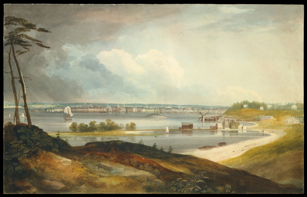
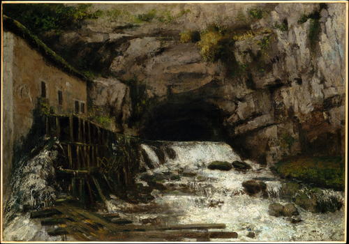

1 Paintings catalogue FSCI
Objective: Make a selection paintings for the exhibition catalogue to be selected from Wikidata and rendered multi-format in Quarto.
The below Python code uses SPARQLWrapper to retrieve data from Wikidata based on a SPARQL query.
Wikidata link: http://www.wikidata.org/entity/Q104412992
Creator: William Guy Wall
Inventory number: 54.90.301
Made from material(s):
Location: Metropolitan Museum of Art
Genre(s): landscape art
Depicts: river, boat, landscape art

Wikidata link: http://www.wikidata.org/entity/Q116444817
Made from material(s):
Genre(s): landscape art
Depicts: river, mountain, waterfall
Wikidata link: http://www.wikidata.org/entity/Q16667013
Creator: Arkhip Kuindzhi
Inventory number: 1974.100
Made from material(s): oil paint, canvas
Location: Metropolitan Museum of Art
Genre(s): landscape art
Depicts: Sun, river, evening, Dnieper, landscape art
Wikidata link: http://www.wikidata.org/entity/Q1913390
Creator: Thomas Eakins
Inventory number: 34.92
Made from material(s): oil paint
Location: Metropolitan Museum of Art
Genre(s): portrait, landscape art
Depicts: house, river, man, tree, bridge, boat, landscape, rowing

Wikidata link: http://www.wikidata.org/entity/Q19905131
Creator: Claude Monet
Inventory number: 29.100.110
Made from material(s): oil paint, canvas
Location: Metropolitan Museum of Art
Genre(s):
Depicts: river, tree
Wikidata link: http://www.wikidata.org/entity/Q19905268
Creator: Georges Seurat
Inventory number: 2002.62.3
Made from material(s): oil paint, canvas
Location: Metropolitan Museum of Art
Genre(s): landscape art
Depicts: house, river, tree, boat
Wikidata link: http://www.wikidata.org/entity/Q19905309
Creator: Gustave Courbet
Inventory number: 29.100.122
Made from material(s): oil paint, canvas
Location: Metropolitan Museum of Art
Genre(s): landscape art
Depicts: river

Wikidata link: http://www.wikidata.org/entity/Q19905328
Creator: Bernardo Bellotto
Inventory number: 39.142
Made from material(s): oil paint, canvas
Location: Metropolitan Museum of Art
Genre(s):
Depicts: woman, town, river, man, boat

Wikidata link: http://www.wikidata.org/entity/Q19905353
Creator: Claude Monet
Inventory number: 29.100.108
Made from material(s): oil paint, canvas
Location: Metropolitan Museum of Art
Genre(s):
Depicts: winter, river, ice

Wikidata link: http://www.wikidata.org/entity/Q19905366
Creator: Camille Pissarro
Inventory number: 58.133
Made from material(s): oil paint, canvas
Location: Metropolitan Museum of Art
Genre(s):
Depicts: river, Rouen, boat, port, steamboat

Wikidata link: http://www.wikidata.org/entity/Q19905448
Creator: Claude Monet
Inventory number: 51.30.3
Made from material(s): oil paint, canvas
Location: Metropolitan Museum of Art
Genre(s): landscape art
Depicts: summer, town, river, tree, landscape art

Wikidata link: http://www.wikidata.org/entity/Q19906251
Creator: Samuel Scott
Inventory number: 44.56
Made from material(s): oil paint, canvas
Location: Metropolitan Museum of Art
Genre(s):
Depicts: cathedral, river, bridge, boat, building

Wikidata link: http://www.wikidata.org/entity/Q19906270
Creator: Camille Pissarro
Inventory number: 1980.21.1
Made from material(s): oil paint, canvas
Location: Metropolitan Museum of Art
Genre(s): cityscape
Depicts: city, river, ship, bridge, Rouen, boat, port, chimney

Wikidata link: http://www.wikidata.org/entity/Q19911476
Creator: Nicolas Poussin
Inventory number: 71.56
Made from material(s): oil paint, canvas
Location: Metropolitan Museum of Art
Genre(s):
Depicts: river, child, man, Midas

Wikidata link: http://www.wikidata.org/entity/Q19911548
Creator: Théodore Géricault
Inventory number: 1989.183
Made from material(s): oil paint, canvas
Location: Metropolitan Museum of Art
Genre(s): landscape art
Depicts: aqueduct, river, evening, man, landscape art

Wikidata link: http://www.wikidata.org/entity/Q19911635
Creator: Claude Lorrain
Inventory number: 28.117
Made from material(s): oil paint, canvas
Location: Metropolitan Museum of Art
Genre(s): landscape art
Depicts: woman, river, man, boat, landscape art

Wikidata link: http://www.wikidata.org/entity/Q19911677
Creator: Pierre-Henri de Valenciennes
Inventory number: 2003.42.54
Made from material(s):
Location: Metropolitan Museum of Art
Genre(s):
Depicts: river, tree

Wikidata link: http://www.wikidata.org/entity/Q19911793
Creator: http://www.wikidata.org/.well-known/genid/412613f48ccb2e3a893a23a2f14d6d9b
Inventory number: 2003.42.17
Made from material(s):
Location: Metropolitan Museum of Art
Genre(s): landscape art
Depicts: river, landscape art
Wikidata link: http://www.wikidata.org/entity/Q19911819
Creator: Paul Cézanne
Inventory number: 2001.473
Made from material(s): oil paint, canvas
Location: Metropolitan Museum of Art
Genre(s): genre art
Depicts: woman, river, man

Wikidata link: http://www.wikidata.org/entity/Q19911853
Creator: Claude Lorrain
Inventory number: 65.181.12
Made from material(s): oil paint, canvas
Location: Metropolitan Museum of Art
Genre(s): landscape art
Depicts: cattle, river, landscape, landscape art

Wikidata link: http://www.wikidata.org/entity/Q19911853
Creator: Claude Lorrain
Inventory number: 65.181.12
Made from material(s): oil paint, canvas
Location: Olantigh
Genre(s): landscape art
Depicts: cattle, river, landscape, landscape art

Wikidata link: http://www.wikidata.org/entity/Q19911975
Creator: Jules Dupré
Inventory number: 67.213
Made from material(s): oil paint, canvas
Location: Metropolitan Museum of Art
Genre(s): landscape art
Depicts: dog, horse, cattle, river, equestrianism, landscape art

Wikidata link: http://www.wikidata.org/entity/Q19912124
Creator: Claude Monet
Inventory number: 67.187.88
Made from material(s): oil paint, canvas
Location: Metropolitan Museum of Art
Genre(s):
Depicts: river, Petite Creuse

Wikidata link: http://www.wikidata.org/entity/Q19912126
Creator: Claude Monet
Inventory number: 56.135.6
Made from material(s): oil paint, canvas
Location: Metropolitan Museum of Art
Genre(s):
Depicts: river, boat, building, Palace of Westminster

Wikidata link: http://www.wikidata.org/entity/Q19912128
Creator: Claude Monet
Inventory number: 56.135.5
Made from material(s): oil paint, canvas
Location: Metropolitan Museum of Art
Genre(s): landscape art
Depicts: river, landscape art

Wikidata link: http://www.wikidata.org/entity/Q19912296
Creator: Philip de Koninck
Inventory number: 63.43.2
Made from material(s): oil paint, canvas
Location: Metropolitan Museum of Art
Genre(s): landscape art
Depicts: river, boat, landscape art

Wikidata link: http://www.wikidata.org/entity/Q19912384
Creator: Claude Monet
Inventory number: 56.135.4
Made from material(s): oil paint, canvas
Location: Metropolitan Museum of Art
Genre(s):
Depicts: river, morning, tree